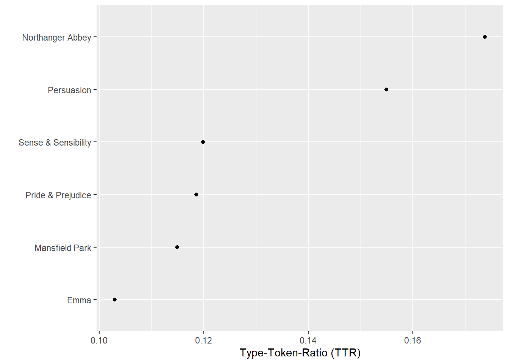
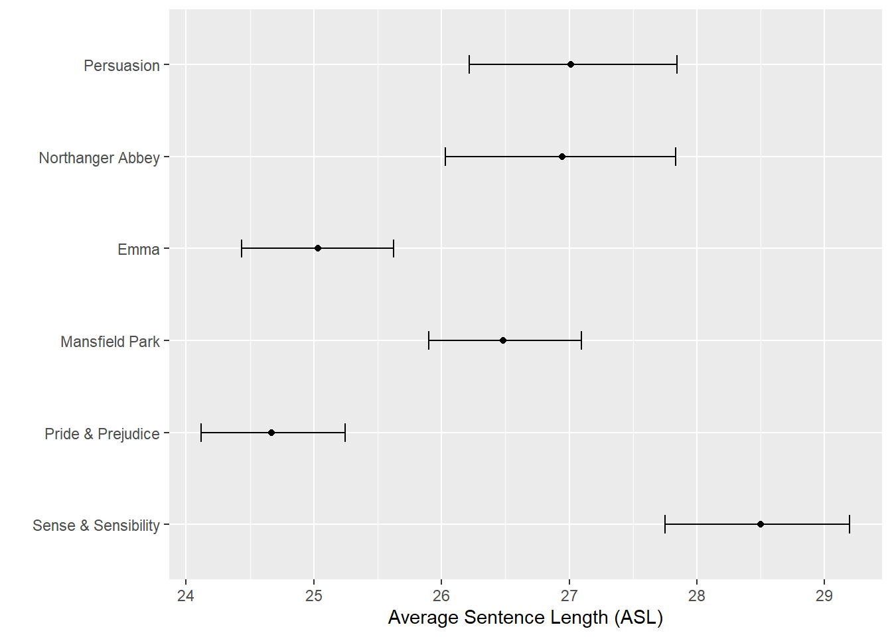

Computational Literary Stylistics with R
Dattatreya Majumdar and Martin Schweinberger
2021-01-23

Introduction
This tutorial focuses on computational literary stylistics (also digital literary stylistics) and exemplifies how computational literary stylistic analyses can be done in R. This tutorial builds on and expands Silge and Robinson (2017) (see here) and the entire code for the sections below can be downloaded here.
Literary stylistics
Literary stylistics refers to analyses of the language of literary texts by computational means using linguistic concepts and categories, with the goal of finding patters among the literary texts under investigation and explaining how literary meanings are created by specific language choices and patterning, the linguistic foregrounding, in the text.
Before we continue, we need to define certain terms of concepts that rae related to literary stylistics and that we will use repeatedly in this tutorials and that we need to define so that the analysis shown below makes sense.
Term Frequency is the measure of importance of a word in a document or how frequently it appears in that document. However there are some words such as “the”,“is”, “of”, etc. which appear frequently even though they might not be important. An approach of using a list of stop-words and removing them before analysis can be useful but in case of some documents these words might be highly relevant.
Inverse Document Frequency decreases the weight for most used words and increases the weight for words that are not much used in a collection of documents. This together with the Term Frequency can be used to calculate a term’s tf-idf (the multiplication of both the terms) which adjusts the frequency of the term based on how rarely it is used. Mathematically idf can be expressed as follows:
\[\begin{equation} idf_{(term)}= ln (\frac{n_{documents}}{n_{documents\; containing\; term}}) \end{equation}\]
For this tutorial we will analyze the data set pertaining to Jane Austen’s novels.
Preparation and session set up
This tutorial is based on R. If you have not installed R or are new to it, you will find an introduction to and more information how to use R here. For this tutorials, we need to install certain packages from an R library so that the scripts shown below are executed without errors. Before turning to the code below, please install the packages by running the code below this paragraph. If you have already installed the packages mentioned below, then you can skip ahead ignore this section. To install the necessary packages, simply run the following code - it may take some time (between 1 and 5 minutes to install all of the libraries so you do not need to worry if it takes some time).
# clean current workspace
rm(list=ls(all=T))
# set options
options(stringsAsFactors = F)
# install libraries
install.packages(c("tidytext","janeaustenr","tidyverse"))Once you have installed R and RStudio and initiated the session by executing the code shown above, you are good to go.
Getting started
For this tutorial we will be primarily requiring 3 packages: tidytext, janeaustenr and tidyverse. The tidytext package provides functions and supporting data sets to allow conversion of text to and from tidy formats, and to switch seamlessly between tidy tools and existing text mining packages. The janeaustenr package is used to load the collection of novels by Jane Austen. The tidyverse package provides functions for data processing and visualization.
We will start by loading the required packages.
library(tidyverse)
library(janeaustenr)
library(tidytext)
library(forcats)
library(quanteda)Extracting words
austen_texts <- austen_books() %>%
dplyr::filter(book == "Pride & Prejudice") %>%
dplyr::summarise(text = paste0(text, collapse = " ")) %>%
stringr::str_squish()
names(austen_texts) <- "Pride & Prejudice"
pride <- quanteda::kwic(austen_texts, "pride") %>%
as.data.frame()
# inspect data
head(pride)## docname from to pre keyword
## 1 Pride & Prejudice 1 1 PRIDE
## 2 Pride & Prejudice 6073 6073 he is eat up with pride
## 3 Pride & Prejudice 6179 6179 him . " " His pride
## 4 Pride & Prejudice 6194 6194 offend _me_ so much as pride
## 5 Pride & Prejudice 6266 6266 I could easily forgive _his_ pride
## 6 Pride & Prejudice 6277 6277 mortified _mine_ . " " Pride
## post pattern
## 1 AND PREJUDICE By Jane Austen pride
## 2 , and I dare say pride
## 3 , " said Miss Lucas pride
## 4 often does , because there pride
## 5 , if he had not pride
## 6 , " observed Mary , prideIdentifying Keywords
The problem underlying the identification of keywords is to figure out the importance of words in each document. We can assign weights to words that are more characteristic for a text if these terms are used more frequently than expected in a given text. We can then show terms ordered by their relative weight. Using the bind_tf_idf() function from the tidytext package, we can extract tf-idf scores which represent these relative weights and we can also report other parameters such as number of occurrences of that word, total number of words and term frequency.
book_words <- austen_books() %>%
tidytext::unnest_tokens(word, text) %>%
dplyr::count(book, word, sort = TRUE) %>%
dplyr::group_by(book) %>%
dplyr::mutate(total = sum(n))
book_tf_idf <- book_words %>%
tidytext::bind_tf_idf(word, book, n)
# inspect data
book_tf_idf## # A tibble: 40,379 x 7
## # Groups: book [6]
## book word n total tf idf tf_idf
## <fct> <chr> <int> <int> <dbl> <dbl> <dbl>
## 1 Mansfield Park the 6206 160460 0.0387 0 0
## 2 Mansfield Park to 5475 160460 0.0341 0 0
## 3 Mansfield Park and 5438 160460 0.0339 0 0
## 4 Emma to 5239 160996 0.0325 0 0
## 5 Emma the 5201 160996 0.0323 0 0
## 6 Emma and 4896 160996 0.0304 0 0
## 7 Mansfield Park of 4778 160460 0.0298 0 0
## 8 Pride & Prejudice the 4331 122204 0.0354 0 0
## 9 Emma of 4291 160996 0.0267 0 0
## 10 Pride & Prejudice to 4162 122204 0.0341 0 0
## # ... with 40,369 more rowsFrom the above table it is evident that the extremely common words have a very low inverse document frequency and thus a low tf-idf score. The inverse document frequency will be a higher number for words that occur in fewer documents in the collection of novels.
book_tf_idf %>%
dplyr::select(-total) %>%
dplyr::arrange(desc(tf_idf))## # A tibble: 40,379 x 6
## # Groups: book [6]
## book word n tf idf tf_idf
## <fct> <chr> <int> <dbl> <dbl> <dbl>
## 1 Sense & Sensibility elinor 623 0.00519 1.79 0.00931
## 2 Sense & Sensibility marianne 492 0.00410 1.79 0.00735
## 3 Mansfield Park crawford 493 0.00307 1.79 0.00551
## 4 Pride & Prejudice darcy 373 0.00305 1.79 0.00547
## 5 Persuasion elliot 254 0.00304 1.79 0.00544
## 6 Emma emma 786 0.00488 1.10 0.00536
## 7 Northanger Abbey tilney 196 0.00252 1.79 0.00452
## 8 Emma weston 389 0.00242 1.79 0.00433
## 9 Pride & Prejudice bennet 294 0.00241 1.79 0.00431
## 10 Persuasion wentworth 191 0.00228 1.79 0.00409
## # ... with 40,369 more rowsFor better visualisation of the words having high tf-idf scores in Jane Austen’s novels the following plots will be helpful.
book_tf_idf %>%
dplyr::group_by(book) %>%
slice_max(tf_idf, n = 15) %>%
dplyr::ungroup() %>%
ggplot(aes(tf_idf, fct_reorder(word, tf_idf), fill = book)) +
geom_col(show.legend = FALSE) +
facet_wrap(~book, ncol = 2, scales = "free") +
labs(x = "tf-idf", y = NULL)
Highest tf-idf words in each of Jane Austen’s Novels
As you can see, the method has indeed extracted words (and by extension concepts) that are characteristic of the texts.
Extracting Structural Features
Extracting structural features of texts is a very common and has a wide range of applications.
Word-Frequency Distributions
Next, we load Jane Austen’s novels and determine term-frequency and then determine idf.
book_words <- austen_books() %>%
tidytext::unnest_tokens(word, text) %>%
dplyr::count(book, word, sort = TRUE) %>%
dplyr::group_by(book) %>%
dplyr::mutate(total = sum(n))
# inspect data
head(book_words)## # A tibble: 6 x 4
## # Groups: book [2]
## book word n total
## <fct> <chr> <int> <int>
## 1 Mansfield Park the 6206 160460
## 2 Mansfield Park to 5475 160460
## 3 Mansfield Park and 5438 160460
## 4 Emma to 5239 160996
## 5 Emma the 5201 160996
## 6 Emma and 4896 160996From the above table it is evident that the usual suspects “the”, “and” ,“to” and so-forth are leading in terms of their usage in that book. Now let us look at the distribution of n/total for each novel, which actually is the term frequency.
ggplot(book_words, aes(n/total, fill = book)) +
geom_histogram(show.legend = FALSE) +
xlim(NA, 0.0009) +
facet_wrap(~book, ncol = 2, scales = "free_y")
Term frequency distribution in Jane Austen’s novels
From the plots it is clear that there many words which occur rarely and fewer words that occur frequently.
Zipf’s Law
Zipf’s Law represents an empirical power law or power function that was established in the 1930s and it is the most fundamental law in linguistics (see Zipf 1935). This law states that the frequency that a word is inversely proportional to its rank in a text or collection of texts.
Let * N be the number of elements in a text (or collection of texts); * k be their rank; * s be the value of the exponent characterizing the distribution.
Zipf’s law then predicts that out of a population of N elements, the normalized frequency of the element of rank k, f(k;s,N), is:
\[\begin{equation} f(k;s,N)={\frac {1/k^{s}}{\sum \limits _{n=1}^{N}(1/n^{s})}} \end{equation}\]
In the code chunk below, we check if Zipf’s Law applies to the words that occur in Jane Austen’s novels.
freq_by_rank <- book_words %>%
dplyr::group_by(book) %>%
dplyr::mutate(rank = row_number(),
`term frequency` = n/total) %>%
dplyr::ungroup()
# inspect data
freq_by_rank## # A tibble: 40,379 x 6
## book word n total rank `term frequency`
## <fct> <chr> <int> <int> <int> <dbl>
## 1 Mansfield Park the 6206 160460 1 0.0387
## 2 Mansfield Park to 5475 160460 2 0.0341
## 3 Mansfield Park and 5438 160460 3 0.0339
## 4 Emma to 5239 160996 1 0.0325
## 5 Emma the 5201 160996 2 0.0323
## 6 Emma and 4896 160996 3 0.0304
## 7 Mansfield Park of 4778 160460 4 0.0298
## 8 Pride & Prejudice the 4331 122204 1 0.0354
## 9 Emma of 4291 160996 4 0.0267
## 10 Pride & Prejudice to 4162 122204 2 0.0341
## # ... with 40,369 more rowsTo get a better understating of Zipf’s law, let us visualize the distribution by plotting on the logged rank of elements on the x-axis and logged frequency of the terms on the y-axis.
freq_by_rank %>%
ggplot(aes(rank, `term frequency`, color = book)) +
geom_line(size = 1.1, alpha = 0.8, show.legend = FALSE) +
scale_x_log10() +
scale_y_log10()
Zipf’s law for Jane Austen’s novels
We can see that the plot has a negative slope which corroborates the inverse relationship of rank with respect to term frequency which shows that the words in Jane Austin’s novels follow Zipf’s law.
Lexical Diversity
Lexical diversity is a complexity measure that provides information about the lexicon size of a text, i.e. how many different words occur in a text given the size of the text. Typically higher values indicate higher lexical diversity. For example, the Type-Token-Ratio (TTR) provides information about the number of word tokens (individual instances of a word) divided by the number of different word types (word forms).
To elaborate, the sentence The dog chased the cat contains five tokens but only 4 types because the occurs twice. More complex texts or more advanced learners of a language commonly have higher TTRs compared to simpler texts or less advanced language learners.
In the following example, we calculate the TTRs for the novels of Jane Austen.
austen_books <- austen_books() %>%
dplyr::group_by(book) %>%
dplyr::summarise(text = paste(text, collapse = " "))
austen <- austen_books %>%
dplyr::pull(text)
names(austen) <- austen_books %>%
dplyr::pull(book)
tokens_austen <- austen %>%
quanteda::corpus() %>%
quanteda::tokens()
# inspect data
head(tokens_austen)## Tokens consisting of 6 documents.
## Sense & Sensibility :
## [1] "SENSE" "AND" "SENSIBILITY" "by" "Jane"
## [6] "Austen" "(" "1811" ")" "CHAPTER"
## [11] "1" "The"
## [ ... and 141,483 more ]
##
## Pride & Prejudice :
## [1] "PRIDE" "AND" "PREJUDICE" "By" "Jane" "Austen"
## [7] "Chapter" "1" "It" "is" "a" "truth"
## [ ... and 143,845 more ]
##
## Mansfield Park :
## [1] "MANSFIELD" "PARK" "(" "1814" ")" "By"
## [7] "Jane" "Austen" "CHAPTER" "I" "About" "thirty"
## [ ... and 186,754 more ]
##
## Emma :
## [1] "EMMA" "By" "Jane" "Austen" "VOLUME" "I"
## [7] "CHAPTER" "I" "Emma" "Woodhouse" "," "handsome"
## [ ... and 193,269 more ]
##
## Northanger Abbey :
## [1] "NORTHANGER" "ABBEY" "by" "Jane"
## [5] "Austen" "(" "1803" ")"
## [9] "ADVERTISEMENT" "BY" "THE" "AUTHORESS"
## [ ... and 91,497 more ]
##
## Persuasion :
## [1] "Persuasion" "by" "Jane" "Austen" "("
## [6] "1818" ")" "Chapter" "1" "Sir"
## [11] "Walter" "Elliot"
## [ ... and 97,409 more ]dfm(tokens_austen, remove = stopwords("en")) %>%
quanteda::textstat_lexdiv(measure = "all") %>%
tidyr::gather(Measure, Value, TTR:lgeV0) %>%
dplyr::mutate(Measure = factor(Measure)) %>%
dplyr::filter(Measure %in% c("TTR")) %>%
ggplot(aes(x = Value, y = reorder(document, Value))) +
geom_point() +
xlab("Type-Token-Ratio (TTR)") +
ylab("")
Average Sentence Length
library(lexRankr)
austen_sentences <- austen_books() %>%
dplyr::group_by(book) %>%
dplyr::summarise(text = paste(text, collapse = " ")) %>%
lexRankr::unnest_sentences(sentence, text)
# inspect data
head(austen_sentences)## book sent_id
## 1 Sense & Sensibility 1
## 2 Sense & Sensibility 2
## 3 Sense & Sensibility 3
## 4 Sense & Sensibility 4
## 5 Sense & Sensibility 5
## 6 Sense & Sensibility 6
## sentence
## 1 SENSE AND SENSIBILITY by Jane Austen (1811) CHAPTER 1 The family of Dashwood had long been settled in Sussex.
## 2 Their estate was large, and their residence was at Norland Park, in the centre of their property, where, for many generations, they had lived in so respectable a manner as to engage the general good opinion of their surrounding acquaintance.
## 3 The late owner of this estate was a single man, who lived to a very advanced age, and who for many years of his life, had a constant companion and housekeeper in his sister.
## 4 But her death, which happened ten years before his own, produced a great alteration in his home; for to supply her loss, he invited and received into his house the family of his nephew Mr. Henry Dashwood, the legal inheritor of the Norland estate, and the person to whom he intended to bequeath it.
## 5 In the society of his nephew and niece, and their children, the old Gentleman's days were comfortably spent.
## 6 His attachment to them all increased.austen_sentences %>%
dplyr::mutate(sentlength = stringr::str_count(sentence, '\\w+')) %>%
ggplot(aes(x = sentlength, y = book, group = book)) +
stat_summary(fun = mean, geom = "point") +
stat_summary(fun.data = mean_cl_boot, geom = "errorbar", width = 0.2) +
xlab("Average Sentence Length (ASL)") +
ylab("")
Similarity among literary texts
feature_mat <- austen %>%
quanteda::corpus() %>%
quanteda::dfm(remove_punct = TRUE, remove_url = TRUE, remove_symbols = TRUE) %>%
quanteda::dfm_remove(pattern = stopwords("en"))
# inspect data
ndoc(feature_mat)## [1] 6topfeatures(feature_mat)## mr mrs must said much miss one every think well
## 3015 2446 2071 2041 1935 1855 1822 1455 1440 1420austen_dist <- as.dist(textstat_dist(feature_mat))
austen_clust <- hclust(austen_dist)
plot(austen_clust)
Networks of Personas
# load data
romeo <- read.delim("https://slcladal.github.io/data/romeo.txt", sep = "\t")
# convert into feature co-occurrence matrix
romeo_fcm <- as.fcm(as.matrix(romeo))
# inspect data
romeo_fcm## Feature co-occurrence matrix of: 23 by 23 features.
## features
## features Abraham Benvolio LordCapulet Gregory LadyCapulet LadyMontague
## Abraham 1 1 1 1 1 1
## Benvolio 1 7 3 1 2 1
## LordCapulet 1 3 9 1 7 1
## Gregory 1 1 1 1 1 1
## LadyCapulet 1 2 7 1 10 1
## LadyMontague 1 1 1 1 1 1
## LordMontague 1 2 2 1 3 1
## PrinceEscalus 1 2 2 1 3 1
## Romeo 1 7 5 1 4 1
## Sampson 1 1 1 1 1 1
## features
## features LordMontague PrinceEscalus Romeo Sampson
## Abraham 1 1 1 1
## Benvolio 2 2 7 1
## LordCapulet 2 2 5 1
## Gregory 1 1 1 1
## LadyCapulet 3 3 4 1
## LadyMontague 1 1 1 1
## LordMontague 3 3 3 1
## PrinceEscalus 3 3 3 1
## Romeo 3 3 14 1
## Sampson 1 1 1 1
## [ reached max_feat ... 13 more features, reached max_nfeat ... 13 more features ]textplot_network(romeo_fcm, min_freq = 0.1, edge_alpha = 0.1, edge_size = 5)
Citation & Session Info
Majumdar, Dattatreya and Martin Schweinberger. 2021. Literary Stylistics with R. Brisbane: The University of Queensland. url: https://slcladal.github.io/litsty.html (Version 2021.01.23).
@manual{Majumdar2021ta,
author = {Majumdar, Dattatreya and Martin Schweinberger},
title = {Literary Stylistics with R},
note = {https://slcladal.github.io/litsty.html},
year = {2021},
organization = "The University of Queensland, Australia. School of Languages and Cultures},
address = {Brisbane},
edition = {2021.01.23}
}sessionInfo()## R version 4.0.3 (2020-10-10)
## Platform: x86_64-w64-mingw32/x64 (64-bit)
## Running under: Windows 10 x64 (build 19041)
##
## Matrix products: default
##
## locale:
## [1] LC_COLLATE=German_Germany.1252 LC_CTYPE=German_Germany.1252
## [3] LC_MONETARY=German_Germany.1252 LC_NUMERIC=C
## [5] LC_TIME=German_Germany.1252
##
## attached base packages:
## [1] stats graphics grDevices utils datasets methods base
##
## other attached packages:
## [1] lexRankr_0.5.2 quanteda_2.1.2 tidytext_0.2.6 janeaustenr_0.1.5
## [5] forcats_0.5.0 stringr_1.4.0 dplyr_1.0.2 purrr_0.3.4
## [9] readr_1.4.0 tidyr_1.1.2 tibble_3.0.4 ggplot2_3.3.2
## [13] tidyverse_1.3.0
##
## loaded via a namespace (and not attached):
## [1] fs_1.5.0 usethis_1.6.3 lubridate_1.7.9
## [4] RColorBrewer_1.1-2 httr_1.4.2 SnowballC_0.7.0
## [7] tools_4.0.3 backports_1.1.10 utf8_1.1.4
## [10] R6_2.5.0 rpart_4.1-15 Hmisc_4.4-1
## [13] DBI_1.1.0 colorspace_1.4-1 nnet_7.3-14
## [16] withr_2.3.0 tidyselect_1.1.0 gridExtra_2.3
## [19] proxyC_0.1.5 compiler_4.0.3 cli_2.1.0
## [22] rvest_0.3.6 htmlTable_2.1.0 network_1.16.1
## [25] xml2_1.3.2 labeling_0.4.2 scales_1.1.1
## [28] checkmate_2.0.0 digest_0.6.27 foreign_0.8-80
## [31] rmarkdown_2.5 base64enc_0.1-3 jpeg_0.1-8.1
## [34] pkgconfig_2.0.3 htmltools_0.5.0 dbplyr_2.0.0
## [37] highr_0.8 htmlwidgets_1.5.2 rlang_0.4.8
## [40] readxl_1.3.1 rstudioapi_0.11 farver_2.0.3
## [43] generics_0.1.0 jsonlite_1.7.1 statnet.common_4.4.1
## [46] tokenizers_0.2.1 magrittr_1.5 Formula_1.2-4
## [49] Matrix_1.2-18 Rcpp_1.0.5 munsell_0.5.0
## [52] fansi_0.4.1 lifecycle_0.2.0 stringi_1.5.3
## [55] yaml_2.2.1 grid_4.0.3 ggrepel_0.8.2
## [58] crayon_1.3.4 lattice_0.20-41 haven_2.3.1
## [61] splines_4.0.3 hms_0.5.3 sna_2.6
## [64] knitr_1.30 pillar_1.4.6 stopwords_2.0
## [67] rle_0.9.2 fastmatch_1.1-0 reprex_0.3.0
## [70] glue_1.4.2 evaluate_0.14 latticeExtra_0.6-29
## [73] data.table_1.13.2 RcppParallel_5.0.2 modelr_0.1.8
## [76] vctrs_0.3.4 png_0.1-7 cellranger_1.1.0
## [79] gtable_0.3.0 assertthat_0.2.1 xfun_0.19
## [82] broom_0.7.2 coda_0.19-4 survival_3.2-7
## [85] cluster_2.1.0 ellipsis_0.3.1References
Silge, Julia, and David Robinson. 2017. Text Mining with R: A Tidy Approach. " O’Reilly Media, Inc.".
Zipf, K, George. 1935. The Psychobiology of Language. Houghton-Mifflin.